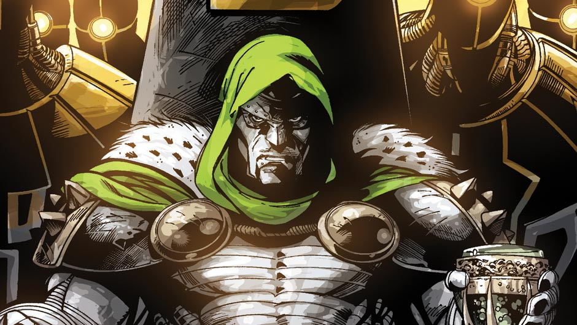

Dr Doom
- Real Name - Victor von Doom
- Height - 6'2 (in armor) 6'7
- Weight - 225lbs (in armor) 415lbs
- Abilities - Doom is a genius in physics, robotics, cybernetics, genetics, weapons technology,
bio-chemistry, and time travel. He is also self-taught
in the mystic arts. Doom is a natural leader, a brilliant
strategist, and a sly deceiver.
- Group Affiliations - Cabal; formerly Knights of the Atomic Table,
Acts of Vengeance prime movers, partner of Namor, employer of the Terrible Trio
- First Appearance - Fantastic Four #5 (1962)
- Origin - Fantastic Four #5 (1962)
- Powers - Doom can exchange minds with others. He possesses some mystical abilities,
such as casting bolts of eldritch energy and invoking mystical entities
(principalities) for additional support. While empowered by the Haazareth,
his mystical powers were on a par with those of Dr. Strange.